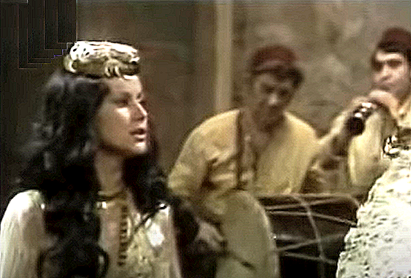
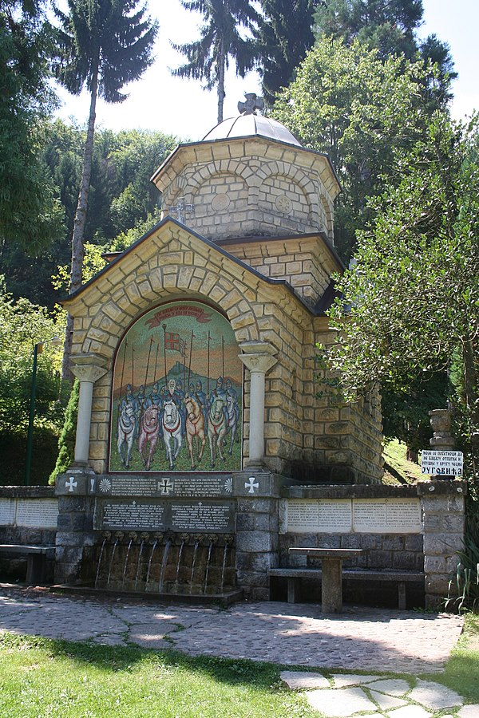

1 Džanum na sred selo
Amis dans le village
(Osma Rukovet - 8ème guirlande :00:00 -01:39 )
|
 Snežana Savić (née en 1953) interprête ce chant dans le film "Koštana" |
|
|
|
 "Džanum na sred selo" - Version Mokranjac |
 "Džanum na sred selo" - Chanté par Divna Djoković (1915-2005) |
 "Džanum na sred selo" - Chanté par Gordana Lazarević |
NOTE
|
Поређење три верзије омогућава да се закључи да је једној од три младе девојке обећан брак од којег се плаши. У зависности од верзије, она тражи чисту воду или мутну воду да утажи жеђ ("да пијем") и пронађе сан ("да спијем"). У верзији коју je бележиo Мокрањац она користи глагол „проћи“. Њени сапутници је подсећају да није близу фонтане, већ у соби гдe се спава и гдe се воли. У свакој строфи појављују се две турске речи које је српска поезија волела (yколико је ово заиста српски језик!): „џанум“ (душо моја!), „аго“ (можда вокатив од „ага“, који се користи као реч „принц“ у француским баладама) |
Le rapprochement des trois versions permet de conclure qu'une des trois jeunes filles est promise à un mariage qu'elle appréhende. Suivant la version elle demande de l'eau pure ou de l'eau trouble pour étancher sa soif (da pijem) et trouver le sommeil (da spijem). Dans la version notée par Mokranjac, elle utilise le verbe "proći" (passer). Ses compagnes lui rappellent que ce n'est pas près de la fontaine, mais dans une chambre que l'on dort et que l'on aime. Deux mots turcs que la poésie serbe (si tant est qu'il s'agit bien ici encore de langue serbe!) affectionnait reviennent à chaque strophe: "džanum" (mon âme!), "ago" (peut-être le vocatif d'"aga", utilisé comme le mot "Prince" dans les ballades françaises) |
